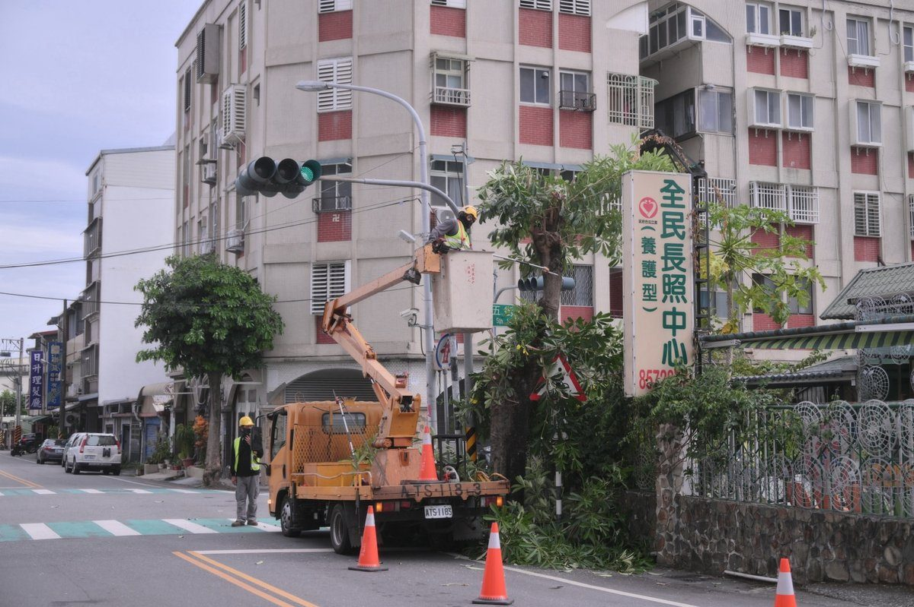

薔琵強風襲吉安香蕉玉米倒伏 游淑貞勘災籲農友速通報災損
可樂電子報小編/編輯 受強烈颱風「薔琵」外圍環流與強風侵襲，花蓮縣吉安鄉陸續傳出農業災 […]…
閱讀全文 →可樂電子報小編/編輯 受強烈颱風「薔琵」外圍環流與強風侵襲，花蓮縣吉安鄉陸續傳出農業災 […]…
閱讀全文 →
可樂電子報小編/編輯 薔琵颱風逼近花蓮，秀林鄉公所於十月二十三日下午三時，針對和平村和 […]…
閱讀全文 →
可樂電子報小編/編輯 受薔琵颱風及其外圍環流影響，花蓮山區道路易發生坍方、落石與路基受 […]…
閱讀全文 →
可樂電子報小編/編輯 受薔琵颱風外圍環流帶來的強勁風勢影響，花 […]…
閱讀全文 →
可樂電子報小編/編輯 強烈颱風「薔琵」持續逼近，外圍環流預估將為東台灣帶來強風豪雨。吉安鄉公所全面提高戒備，提 […]…
閱讀全文 →
可樂電子報小編/編輯 因應強烈颱風「薔琵」逼近東台灣可能帶來的強風豪雨，花蓮縣吉安鄉公 […]…
閱讀全文 →粉紅十月「乳」此心安 花蓮慈院邀女性關注乳房健康。鄉長游淑貞率團隊積極推動花蓮慈濟醫院、乳癌防治、張群明，用心守護鄉親福祉。…
閱讀全文 →
第 43 期・10/23 – 10/29 本週運勢精華指南。🌌 本週星象提示：太陽進天蠍、金星合日、水星也開始逆行。感情與合作的真相會被照亮，話說出口前多想一秒，本週的清醒很有價值。。十二星座運勢詳情、焦點星座分析、週末…
閱讀全文 →
吉安鄉親水線自行車道七腳川旁公廁興辦計畫進入現地會勘階段，鄉長游淑貞偕代表會主席邱美雲及縣議員鄭乾龍等人會勘，工程經費約436萬元，目標明年6、7月啟用。…
閱讀全文 →
可樂電子報小編/編輯 115年光復節連續假期將於10月24日至26日展開，為期3天。花 […]…
閱讀全文 →
可樂電子報小編/編輯 吉安鄉公所推動文化部「社區營造及村落文化發展計畫」，辦理「來去吉 […]…
閱讀全文 →
二十歲女孩在北京不幸遭遇嚴重車禍導致腦出血，面對開顱手術決策，家屬跨海求助花蓮慈濟醫院院長林欣榮。經專業評估採藥物與觀察治療後順利康復，三年後她不僅遠赴澳洲攻讀設計碩士，更專程造訪花蓮慈院當面向林院長致謝，攜手交織出最動…
閱讀全文 →
吉安鄉長游淑貞於鄉民代表會進行任期畢業施政報告，展現8年來爭取近18億外部補助、預算成長至9.3億的亮眼財政成績，施政滿意度達98.8%。公所推動7座部落聚會所、全齡社福、智慧門牌與續修鄉志，榮獲透明晶質獎入圍肯定，代表…
閱讀全文 →
吉安鄉公所攜手洄瀾境太子宮送暖！農曆九月九三太子聖誕之際，廟方發起愛心布施，捐贈暖心便當與綜合物資關懷仁和、仁安村百戶弱勢家庭，鄉長游淑貞致謝公私協力傳遞溫情。…
閱讀全文 →
花蓮吉安鄉公所攜手在地10家宮廟、慈善基金會及中華民國紅十字會，整備1,000份日常生活物資與保暖衣物，專程發放給鄉內1,000戶身障弱勢家庭。活動現場規劃時段分流與貼心搬運服務，並結合健保APP推廣、高齡防災宣導與國軍…
閱讀全文 →
吉安子弟葉峻銘於2026名古屋亞運首度參賽即勇奪卡巴迪團體銅牌！歷經國訓中心兩年高強度訓練與賽事低潮，他憑藉極致自律與狂熱執著突破重圍。吉安鄉公所團隊特別前往其家中頒贈游淑貞鄉長賀榜，肯定他為國爭光，並期許未來再創體壇佳…
閱讀全文 →
民眾前往合歡山旅遊，行經台8線117.5公里處時車輛水箱突然破裂拋錨，面臨高山受困危機。新城警分局合歡派出所警員林宏良接獲求助後迅速趕抵現場，熱心協助補給水源並檢查狀況，讓受困民眾得以在天黑降溫前平安駕車下山。警方特別提…
閱讀全文 →
花蓮慈濟醫院急診部護理長蕭琦諭深耕東臺灣第一線急救十多年，歷經0206強震、太魯閣號事故與0403大地震等嚴峻考驗。她將血淚應變經驗轉化為系統化制度，更帶領團隊建立災難醫療站，卓越的公共服務精神讓她榮獲第64屆十大傑出青…
閱讀全文 →
九九重陽節前夕，吉安鄉公所攜手花蓮縣政府社會處深入社區，探訪仁里村103歲楊錦長與光華村102歲夏宗澤兩位百歲人瑞。現場致贈薄毯、禮金及總統府金鎖片，展現縣鄉協力關懷長者的具體行動。吉安鄉長游淑貞強調，將持續完善在地安老…
閱讀全文 →
吉安鄉公所舉辦第四屆繽紛吉安客話講故事比賽，幼兒園與國小低年級學童以自信童音生動詮釋經典繪本。鄉長游淑貞倡導家庭即教室，透過親子共讀與祖孫對話，讓客語文化在日常生活深耕發芽，傳承母語生命力。…
閱讀全文 →